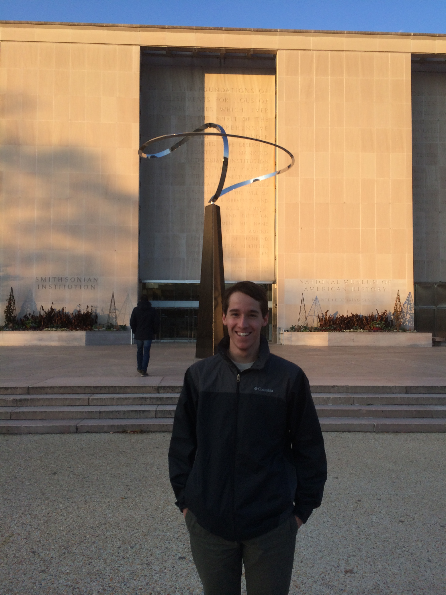

Welcome to Tyler Famiglietti's personal website

Tyler is
- A second year student at George Washington University majoring in Accounting
- Currently working as an accounting assistant at GWU's newspaper, the GW Hatchet
- An experienced professional in customer service through his experience in Six Flags, CVS, and the Smithsonian Museum of Natural History